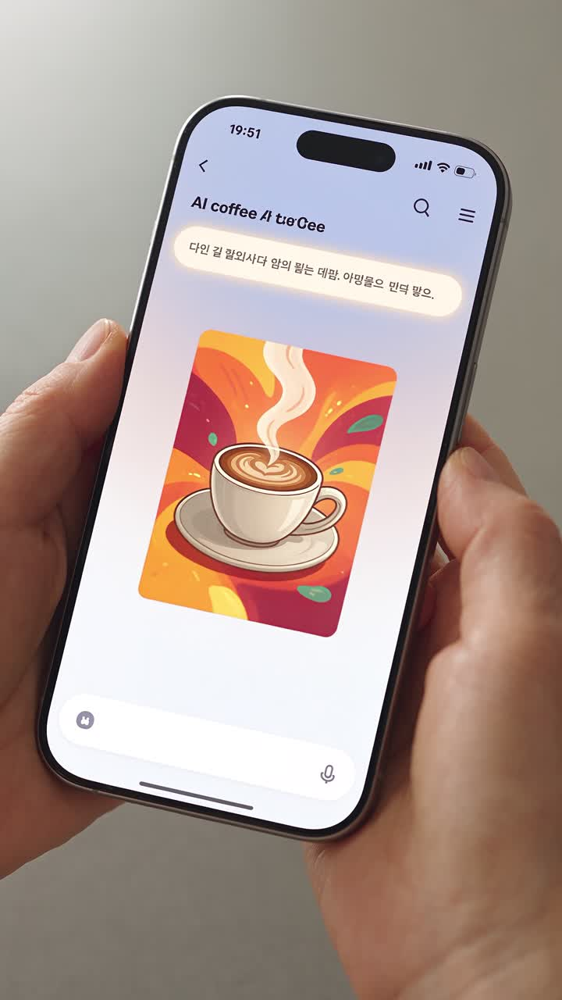

요즘 잘되는 가게,다 이걸 씁니다
장사하기도 바쁜 사장님을 위한 AI 홍보마케팅 실습 교육. AI에게 한 줄만 말하면 인스타 문구, 홍보 이미지, 1분 홍보 영상까지 — 내 가게에 바로 쓰는 결과물을 들고 돌아갑니다.
홍보, 이래서 막막하셨죠?
배달앱·SNS·검색 노출이 매출을 좌우하는 시대인데, 영업에 전념하는 사장님이 따로 시간과 돈을 들여 콘텐츠 제작을 배우기는 현실적으로 어렵습니다. 그래서 이 교육은 영업시간 손실 없이, 짧고 굵게, 결과물이 남게 설계했습니다.
AI에게 한 줄만 말해보세요. 10분이면 끝납니다.
이게 전부입니다. 수업에서 쓴 이 문장(프롬프트)은 단톡방으로 드리니, 가게 이름과 메뉴만 바꿔서 계속 쓰시면 됩니다.

이론이 아닙니다. 그날 바로 쓰는 실습입니다.
강사 1인 + 보조강사 1인이 붙어 한 분 한 분 화면을 보며 함께 만듭니다.
이론이 아닌 실습 중심
각자 노트북·스마트폰으로 직접 만듭니다. 이론은 최소한만, 나머지는 손으로. 교육이 끝나면 내 가게 홍보 영상 1편이 남습니다.
단톡방으로 프롬프트·자료 제공
수업에서 쓴 프롬프트와 교육자료를 단톡방에 바로 올려드립니다. 집에 가서 가게 이름만 바꿔 다시 쓰면 됩니다. 궁금한 건 단톡방에서 물어보세요.
교육 영상으로 언제든 복습
놓친 부분은 교육 영상으로 다시 보면 됩니다. 한 번 듣고 잊어버리는 교육이 아니라, 혼자서도 반복할 수 있는 습관을 만드는 게 목표입니다.
기관·조합은 장소만 준비하세요
홍보물 제작부터 참가 신청, 명찰, 만족도 조사와 결과 보고까지 교육 운영 전 과정을 강사진이 원스탑으로 책임집니다.
4교시 안에 ‘완성의 맛’을 봅니다
영상 편집을 처음부터 끝까지 배우기엔 4시간이 짧습니다. 그래서 1차 과정은 “내 가게 홍보 영상 1편 완성 + 유튜브 업로드”라는 눈에 보이는 결과물에 집중합니다.
AI, 외식업 사장님의 새 직원
- 외식업·소매업에서 바로 쓰는 AI 활용 사례 맛보기
- 생성형 AI 기본 사용법 — 질문하는 법, 홍보 문구 만들기
- 우리 가게 소개 문구·메뉴 설명 AI로 작성
AI로 홍보 이미지·음악 만들기
- 가게 홍보용 이미지 생성 실습
- AI 음악(Suno)으로 우리 가게 배경음악 만들기
- 2일차 영상 제작을 위한 소재 준비
AI로 홍보 영상 완성하기
- 스마트폰으로 찍은 사진·영상 + AI 소재 결합
- 간편 편집 도구(CapCut)로 1분 홍보 영상 제작
- 자막·음악 입히기
유튜브 업로드 & 매듭짓기
- 유튜브 업로드 실습 (계정이 없으면 교육용 계정으로 체험 후 개설 안내)
- 제목·설명·검색 노출 요령
- 성과 공유 및 심화과정 안내
※ 심화 과정(영상 편집 심화, 채널 운영 전략, 쇼츠·릴스 활용)과 월 단위 정기 과정은 희망자 중심으로 별도 운영합니다.
영업에 지장 없게, 브레이크타임에
- 대상
- 소상공인 누구나 외식업·카페·소매·숙박·미용·공방 등 / 조합·기관 단체 신청 가능
- 인원
- 20명 이내 실습 밀착 지도를 위한 적정 인원
- 기간
- 2일 과정 · 1일 2시간 × 2회 총 4시간, 특강 매듭형
- 시간대
- 13:30 ~ 15:30 권장 점심 영업 종료 후, 저녁 영업 준비 전
- 장소
- Wi-Fi 가능한 강의장 남원·정읍 등 전북 전역 출강 / 세팅은 강사진이 지원
- 방식
- 이론 최소화 + 1인 1실습 강사 1인 + 보조강사 1인 배치
- 준비물
- 스마트폰 + 노트북(권장) 노트북 없으면 강사진 보유 노트북 지원(17~18대)
- 수강료
- 신청 시 안내 기관·조합 단체 과정은 별도 협의
소상공인의 현장을 아는 강사가 가르칩니다
- AI활용지도사 1급
- AI마케팅전문가 1급
- AI활용교육전문가 1급
- SNS마케팅전문가 1급
- 마케팅기획전문가 1급
- 정보처리기사
- 무인멀티콥터 조종자 1급
공무원·농업인·소상공인·시니어까지, 대상을 가리지 않고 AI 활용 교육 100시간 이상을 진행했습니다. 팜투어 프로그램을 직접 운영하며 SNS 8개 채널 마케팅을 실무로 해왔고, 7년간 식자재 유통업을 직접 경영했습니다.
그래서 압니다. 사장님에게 필요한 건 AI 이론이 아니라 오늘 저녁 인스타에 올릴 글 한 편이라는 걸.
회원 모집 안내와 장소만 협조해 주시면, 나머지는 저희가 완성합니다
외식업조합, 소상공인연합회, 시·군 지원센터 등 단체 과정은 강의계획서와 교안을 세트로 먼저 보내드려, 검토 즉시 일정을 확정하실 수 있게 준비합니다.
강의계획서와 강의자료를 사전 제공합니다. 내용 확인 후 바로 의사결정이 가능합니다.
웹자보, 구글폼 신청서, 출석부·명찰까지 제작해 현장 세팅합니다.
만족도 조사를 실시하고 결과 분석 보고서를 드립니다. 후속 과정 설계의 근거가 됩니다.
이런 게 궁금하셨죠
컴퓨터를 잘 못하는데 따라갈 수 있나요?
네. 카카오톡을 쓰실 수 있으면 충분합니다. 첫 시간에 크롬 설치와 구글 계정 찾기부터 함께 하고, 강사와 보조강사가 한 분씩 화면을 보며 도와드립니다. 60대 어르신 대상 교육도 여러 번 진행했습니다.
준비물은 뭔가요?
스마트폰만 있으면 됩니다. 노트북이 있으면 개인 계정과 기록이 남아 더 좋고, 없으면 강사진이 보유한 노트북(17~18대)을 빌려드립니다.
정말 영상까지 만들어지나요?
네. 2일차에 스마트폰으로 찍은 사진·영상과 AI로 만든 이미지·음악을 합쳐 1분 홍보 영상을 완성하고, 그 자리에서 유튜브에 올립니다. 유튜브 계정이 없으면 교육용 계정으로 먼저 체험한 뒤 개설을 도와드립니다.
한 번 빠지면 어떻게 하나요?
교육 영상으로 복습하실 수 있고, 단톡방에 프롬프트와 자료가 모두 올라가 있습니다. 궁금한 건 단톡방에 질문하시면 됩니다.
단톡방은 언제 들어가나요?
신청이 접수되면 문자로 단톡방 초대 링크를 보내드립니다. 교육 전에 미리 준비할 것과 일정 안내도 단톡방에서 드립니다.
우리 조합(기관) 회원들만 따로 받을 수 있나요?
네. 20명 이내 단체 과정으로 출강합니다. 장소(인터넷 가능)와 회원 모집 안내만 협조해 주시면 홍보물·신청서·명찰·만족도 조사·결과 보고까지 강사진이 맡습니다.
지금 바로 신청하세요
회원가입 없이 아래 항목만 적어주세요. 접수 후 문자로 단톡방 초대 링크와 일정을 보내드립니다.